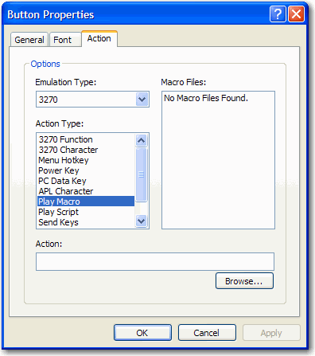

In addition to being able place your VBA Macros on the VBA Macro toolbar, it is also possible to create power pad buttons and assign your VBA Macros to these buttons.
The process of assigning a VBA Macro to a power pad button is almost the same as assigning a BlueZone script to a power pad button.

Instead, you must type the name of the VBA macro, with no file extension, that you want to assign to this button in the Action field.
Then click OK. The VBA macro "Logon" is assigned to this power pad button.